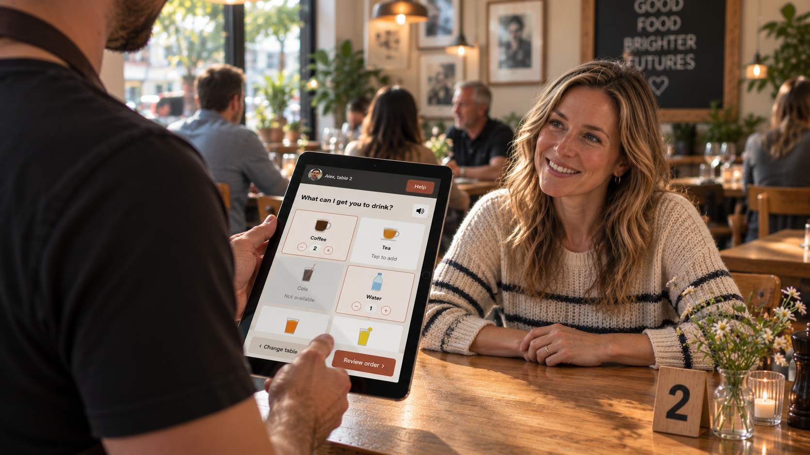
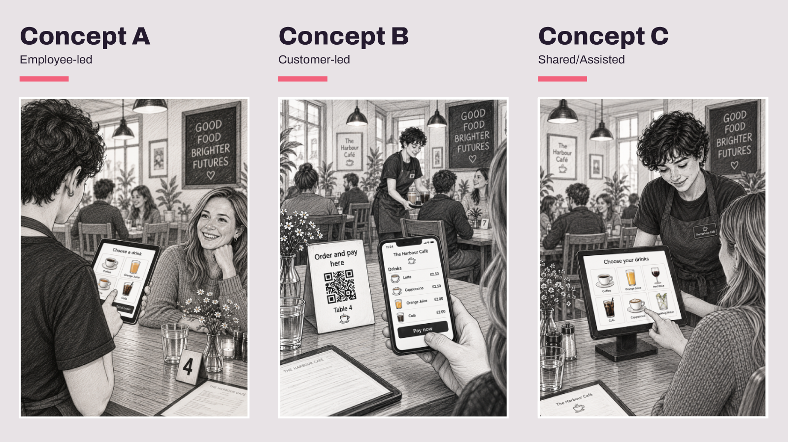

Support without taking control
A proof of concept to help employees with learning difficulties take and serve drinks orders more independently - while keeping the service workable for customers, restaurants and the charity trying to scale it.

Situation
Not a two-sided product
A charity places employees with learning difficulties in partner restaurants, taking and serving drinks orders. The brief asked whether digitising ordering and payment could make that work more accessible - and whether it could be repeated across more restaurants.
It looked like an ordering app. It was really a service with several people holding it up.
Employees with learning difficulties are the primary users. Restaurant customers are secondary - they need a simple, accurate experience that doesn't feel unusual.
Restaurant staff and managers who have to fit this into a real service, support staff who know each employee's needs, and the charity, which needs evidence the model can scale.
- EmployeeConfidence and independence
- CustomerSimple, accurate service
- RestaurantWorks without slowing things down
- CharityEvidence the model can be implemented and scaled
Insight
Digitising the process isn't the same as improving it
Mapping the current service - choose, order, record, prepare, deliver, pay, complete - showed potential barriers at every stage. Some were digital. Many were physical or operational. The real opportunity was to remove unnecessary cognitive load: make choosing easier, reduce memory and reading demands, and make progress obvious.
Supporting someone isn't the same as taking control away from them.
- HMWreduce the barriers to ordering and payment so employees can work more independently - while creating a service restaurants can confidently adopt and scale?
- HMWmake progress obvious, so nobody has to remember what's happening or keep checking with colleagues?
- HMWadd support without moving the employee away from the centre of the service?
Task
Plan the learning, not just the launch
Propose how I'd approach an 8-12 week proof of concept - who I'd involve, what I'd test first, and what I'd design. The aim wasn't to ship an app in twelve weeks. It was to learn enough to make a confident decision about what happens next.
- 01Knowns vs assumptions
- 02Service ecosystem
- 03Current service journey
- 04Design principles
- 05Three concepts
- 06MVP & user flow
- 07Wireframes & hi-fi prototype
- 08Test plan & success measures
- 098-12 week roadmap
Action
Make the assumptions visible, then attack the riskiest
I split what we knew from what we were assuming, and ranked the assumptions by risk. The critical ones - device use, customer interaction, payment, and whether a restaurant's workflow could absorb the change - were the ones to test first. They could change the whole direction.
Four design principles became the guardrails: accessible by default, personal, not prescribed, the person stays in control and familiar wherever they work.
Three concepts, one chosen deliberately. In Concept A, the employee captures the order. In Concept B, the customer orders on their own phone. Concept C captures it together. I compared them against user needs, operational fit, cost and what we could learn in the time. I took A forward - not as the winner, but as the strongest starting point for learning. It keeps the employee in control and can still flex towards shared or customer-led ordering.

The smallest thing to prove. The MVP asked one question for each user. Can the employee complete an order more independently? Does the customer still get a good experience? Can the restaurant process it without adding time or errors? Could the charity repeat it elsewhere?
The user flow keeps the employee at the centre - choose the table, capture and review the order, get a clear signal when drinks are ready, complete the delivery. I took payment out of the employee's flow entirely. Not every step needed digitising.
Rethinking when to test. Normally I'd test on wireframes first. With this audience, asking people to imagine a service from grey boxes risked confusion, upset and disconnection from the change. So wireframes were for internal concept proofing only, and testing moved to a higher-fidelity MVP as early as possible.
High fidelity doesn't mean fully designed. It means close enough to the real thing that nobody has to pretend.

The hi-fi prototype opens in Figma - tap through an order the way an employee would.
The test plan is built around realistic tasks, not "do you like it?" Sessions run in three steps: observe first, then test the design, and give people permission to fail. If someone gets stuck, that's not a bad participant. That's the product giving us information.
Result
A plan built to change its mind
- A chosen concept, MVP user flow, wireframes and a working hi-fi prototype of the employee ordering experience.
- A test plan covering employees, restaurant staff and customers - so success for one group doesn't create a problem for another.
- Success measures for all four users, with baselines set first and targets set from evidence, not invented upfront.
- An 8-12 week roadmap - baseline and feasibility, prototype, test, iterate, then a controlled live pilot.
The goal isn't to launch an app in twelve weeks. It's to have enough evidence to decide what happens next.
Reflection
Knowing when my usual process doesn't fit
The decision I'm most confident in is one that went against my own habits. Low-fidelity testing is usually the cheapest way to learn. Here, it could have been the most expensive - in trust, in comfort and in how people felt about the change.
The other was deciding what not to design. Removing payment from the employee's flow made the product smaller, but the service better. It's easy to assume that digitising every step is progress. Often it just moves the burden somewhere else.
If I took this further, I'd start where the risk is highest - the critical assumptions about devices, customers and the restaurant workflow - before polishing anything. Those are the things most likely to prove me wrong, and the cheapest to find out early.
Success here isn't a clever piece of technology. It's whether someone who needed support can do more for themselves - without making the experience worse for anyone around them.